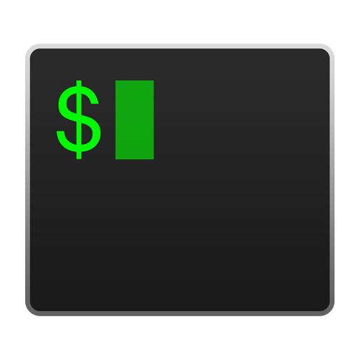
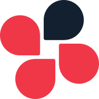
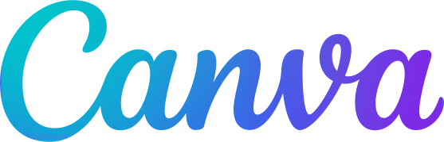

Technologies
これまでに習得した技術スタックと、それぞれの経験領域をご紹介します。
Backend Development
要件定義、設計から開発、運用保守までの幅広い工程を対応いたします。 フロントエンド知識も活かしたAPIの開発なども対応できることが強みです。
Frontend Development
Bootstrap、Material Design、FlexLayoutなどを使用した効率的なUI開発と、柔軟なレスポンシブデザインで、 保守性と拡張性を兼ね備えたフロントエンドシステムを構築します。
Mobile Development
モバイルの実務経験はまだ少ないですが、個人開発を通じて積極的に学習中です。 今後は実務での経験も積み、より幅広い開発領域に対応していきたいと考えています。
Tools & Environment
開発効率を向上させてくれるお気に入りのツールと自宅のデスクをご紹介します。
GitHub
必須
VS Code
メインエディタ
vim
キーバインド
JetBrains
経費削減のため2025年で終了
iTerm2

zsh
Claude
日々感謝
Cursor
感動のAI開発
Postman
API開発の必須アイテム
Notion
情報整理
Trello
プライベートでも大活躍
Slack
Teams
chatwork

Canva

デザイン作成
自宅のデスクは、白いガジェットで統一し、配線が目立たないようすっきりと整えることを意識しています。
特に購入してよかったのはergotron のシングルモニターアームです。
以前はデュアルモニターアームを使用していましたが、シングルに切り替えたことでモニターを机の奥に配置でき、圧迫感が減り、位置調整もしやすくなりました。
また、BenQのモニターライトもお気に入りのアイテムです。
最初は「モニターを照らして意味があるのか？」と思っていたのですが、暗めの部屋でも画面や周辺が見やすくなり、目の負担も軽減されているように感じます。
モニター上に設置できるため机周りがすっきりする点も気に入っています。
PCはMac miniを使用しており、机の裏側に設置することで配線が目立たず、お気に入りのデスク環境になっています。